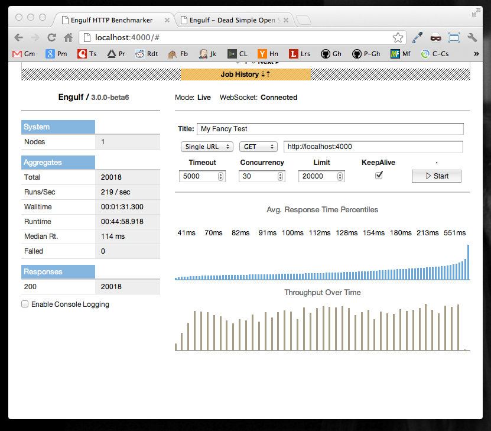

High Performance HTTP Load Testing
Engulf is a scalable and distributed HTTP benchmarker, designed to let you spin up and coordinate a cluster of workers with nothing more than a single JAR. Engulf's backend is written in clojure, the frontend in javascript. Engulf is fully open-source.
Features Include:

java -version in a terminal. The output should look something like java version "1.7.XXXX"java -server -jar engulf-VERSION.jar
Client/server configuration of Engulf is simple. One master node is started which will listen on port 4025. Then, any number of worker nodes maybe started that point to the master. See the example below:
Starting the masterjava -server -jar engulf.jar --mode master
Starting a workerjava -server -jar engulf.jar --mode worker --connect-to 127.0.0.1:4025
Switches Default Desc
--http-port 4000 Listen on this port for the HTTP UI
--manager-port 4025 TCP Port for manager to listen on
--mode :combined {combined:master:worker}
--connect-to ["localhost" 4025] When in worker mode, connect to this TCP host:port
--no-help, --help false Show help, then exit
All data is saved to $HOME/.engulf.sqlite3 on the master node. If you wish to back this up be sure to stop any running instances and make a copy of this file.
Engulf opens a lot of ports very quickly, most OSes have default limits that conflict with that, especially when keep-alive is disabled. To combat this, consider upping your system's max open files via ulimit, and increasing its ephemeral port range.
Engulf is fastest after a few short test runs. You will notice gets faster after a boot given a few test cases. This is due to the fact that Engulf is written in Clojure which runs on the Java Virtual Machine. The HotSpot JIT recompiles code as it runs, making code progressively faster leading to this phenomenon.
Perhaps the easiest way to start up Engulf is with Amazon Cloudformation. The CloudFormation templates will setup either a single instance, or cluster of instances with just a few clicks, along with any security and scaling groups as required. These instances are based on a custom AMI with tuned operating system and JVM settings for optimal performance.
Click here to launch a single instance of Engulf. Click 'continue' on the first screen, then simply fill in the size of instance when prompted. Be sure to use the API name for a given instance type from this list.
When the CloudFormation template is done running, check its output pane on the Amazon Console. There should be a field labeled "URL", with a corresponding URL to its right. Open the URL in your browser to use the web interface.
Please note, all data is saved on the EBS node of your EC2 instance. If you wish to save that data for later make sure to never terminate the instance, but rather to only stop and start it. For other options Read the section on backups.
Click here to launch an Engulf cluster using CloudFormation. Click continue on the first screen. The number of desired workers can be specified up-front, as can the instance sizes of the workers and masters. Please use an instance type from this list. Workers can be scaled up and down by re-running the CloudFormation template (just click the link above a second time and alter the number of nodes).
You may not want to keep the full cluster running at all times. If you do not mind losing data simply delete the CloudFormation stack. If you would like to keep your data around the best strategy is to, in the EC2 console, 'stop' the master node and 'terminate' the workers. This leaves your data intact on the master, and discards the workers which have no data. To start it back up again, start the master and wait for it to fully boot. Then, visit the cloud formation home, select 'EngulfCluster', click 'Update Stack', select 'Provide a Template URL', and paste in http://engulf-project.s3.amazonaws.com/engulf-cluster.template.json'
If you would like to build your own custom cluster on AWS feel free to make use of the custom AMI (ami-5f2a9f36) used by the CloudFormation recipes.
The pre-built Engulf AMI is configured with all the correct dependencies, will always use the latest version of Engulf, uses tuned kernel settings, and uses tuned JVM settings for optimal performance. Options for Engulf can be passed through the user-data option when booting.
http://ec2yourinstance.compute1.amazonaws.com:8080In an Engulf cluster you must provision a single master and multiple workers.
--mode master
ip-0-0-0-0.ec2.internal. You will need this for the next step.--mode worker --connect-to MASTER-INTERNAL-HOSTNAME:4025Don't forget to append ':4025' to the hostname!
Simply point your browser at
http://yourmasterinstance.compute1.amazonaws.com:8080
You should see a number of nodes matching the number of workers you've started up. If the number of nodes is indicated as 0 something is off!
All data in the Engulf VM is persisted to /home/ubuntu/.engulf.sqlite3 on the master node. You can ssh into the node using your provisioned key as the 'ubuntu' user.
Either make sure to keep the master's EBS Volume around, or make sure to backup this file yourself (you probably want to kill any active Engulf processes if manually backing up before doing this).
Engulf can be started/stopped by executing sudo /etc/init.d/engulf stop. It can be started again with sudo /etc/init.d/engulf start
Each benchmark executed is represented by a single job, with multiple nested results in this REST API.
POST /jobs/current + JSON Body
A new benchmark can be started by issuing a POST request to /jobs/current with a JSON body of parameters. The parameters for jobs are:
Parameters:
false will be disabled.true the HTTP connection will stay open while the benchmark is running, and stream results back in chunks. If set to false it will return the job metadata immediately.Examples:
# Testing a single URL
curl -XPOST http://localhost:4000/jobs/current -H 'Content-Type: application/json' -d '{
"formula-name":"http-benchmark", "concurrency":5, "method":"get", "timeout":50, "limit":50000,
"url":"http://localhost:8081", "_stream":"true", "keep-alive":"true"}'
# An example of testing using a markov-chain
curl -XPOST http://localhost:4000/jobs/current -H 'Content-Type: application/json' -d '
{"formula-name":"http-benchmark", "concurrency":5, "timeout":50, "limit":5000,
"keep-alive":"true", "_stream": "true",
"markov-corpus":["http://localhost/foo","http://localhost/bar", "http://localhost/bar",
"http://localhost/baz",{"method": "POST", "url": "http://localhost/fancy"}, "http://localhost/foo",
"http://localhost/foo", {"method": "POST", "url": "http://localhost/fancy"}]}'
DELETE /jobs/current
Stops the currently running benchmark instantly. Returns a representation of the job.
Example: curl -XDELETE http://localhost:4000/jobs/current
GET /jobs
Returns a paginated list of jobs. This will only return the job metadata. To retrieve results, view the job-get API below.
Parameters:
Example: curl http://localhost:4000/jobs?page=1&per-page=10
GET /jobs/UUID
A single job can be retrieving at /jobs/UUID-HERE. It will include all the results nested inside of it.
Example: curl http://localhost:4000/jobs/ef3062e1-7abc-4769-a96c-a654c4219f5c
DELETE /jobs/UUID
This will attempt to delete the job specified by uuid at /jobs/UUID-HERE. Jobs that are currently still running cannot be deleted, and will return an HTTP status of 409 - Conflict.
Example: curl -XDELETE http://localhost:4000/jobs/ef3062e1-7abc-4769-a96c-a654c4219f5c
GET /river supports websockets
The river API consists of a single endpoint /river that understands both plain GET and WebSocket requests. Either way, it returns a stream of JSON messages representing state-changes and results within Engulf.
Most messages sent through the River API utilize the EAV Pattern, and have a format that consists a map of the format: {"entity", "msg-entity" "name": "msg-name", "body", "msg-body"}.
It should be noted that the River API consists only of deltas of nodes and job state changes. The initial request to /river will return messages named "current-nodes" and "current-jobs" respectively. These are a snapshot of the current state of both resources. Messages received subsequently should alter the local state of clients accessing these resources.
More documentation about the River API is on the way, but a reasonable understanding can be gleaned by watching the output of curl /river.
Information about connected worker nodes can be retrieved via this REST API.
GET /nodes
Returns a list of all connected nodes.
Example: curl http://localhost:4000/nodes
GET /nodes/UUID
Returns the metadata for a single connected node.
Example: curl http://localhost:4000/nodes/a-uuid-here
I'd like to thank Zach Tellman, who's work on the fantastic aleph library made much of Engulf possible. I'd also like to thank Trent Strong for the idea of generating requests with Markov chains.
I'd like to thank YourKit for providing this project with their Java profiler (which works excellently with Clojure). It's great at spotting performance issues. More info below:
YourKit is kindly supporting open source projects with its full-featured Java Profiler. YourKit, LLC is the creator of innovative and intelligent tools for profiling Java and .NET applications. Take a look at YourKit's leading software products: YourKit Java Profiler and YourKit .NET Profiler
Copyright (C) 2011 and 2012 Andrew Cholakian
Distributed under the Eclipse Public License, see LICENSE for details